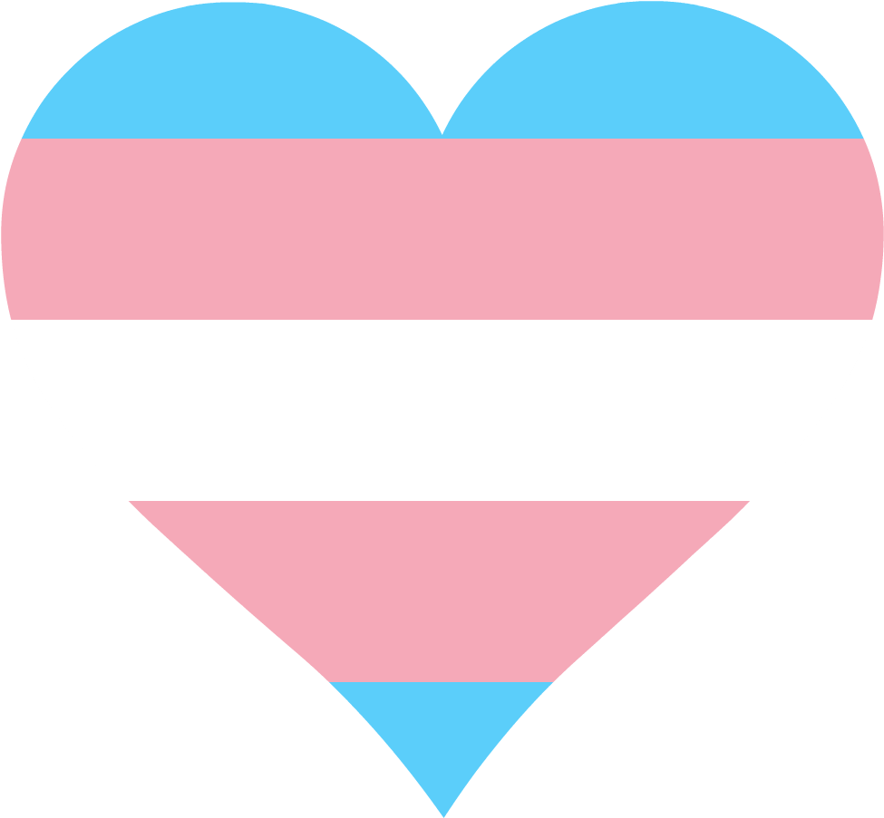

I am fond of self-expression in the fields of graphics, music, and programming,
with a long-standing passion for the classic Doom game series from 1994.
Author of International Doom,
CRL,
CRY and a few other projects.
Honored to have my own page at
DoomWiki.
Contributor to Chocolate Doom,
Crispy Doom and
Doom Retro source ports.
“The best choice I ever made was to be myself”
